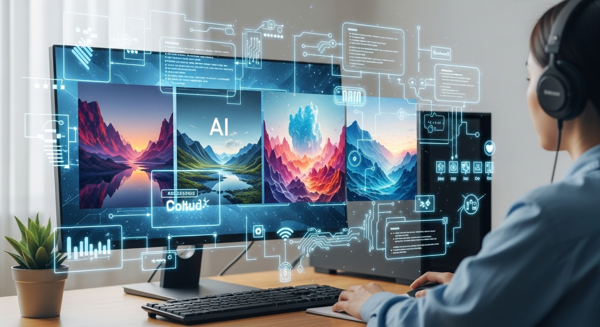
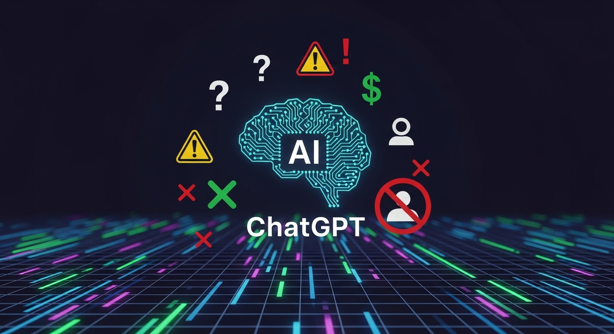
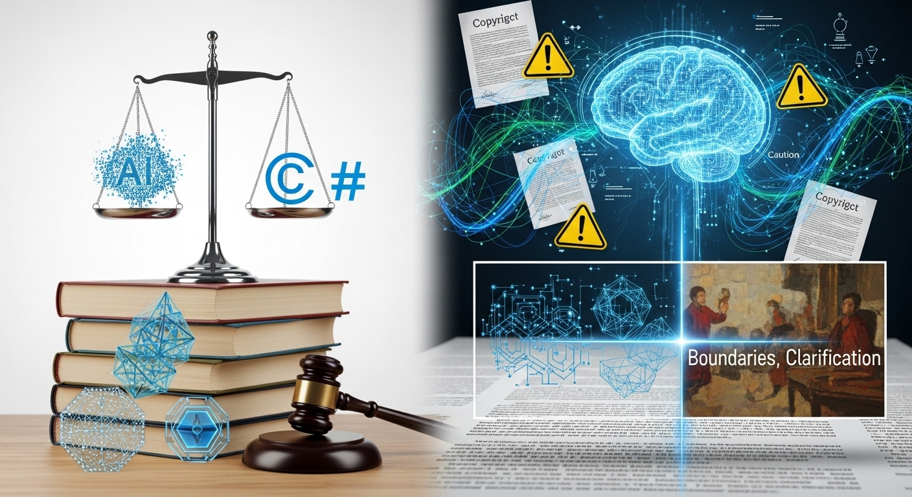
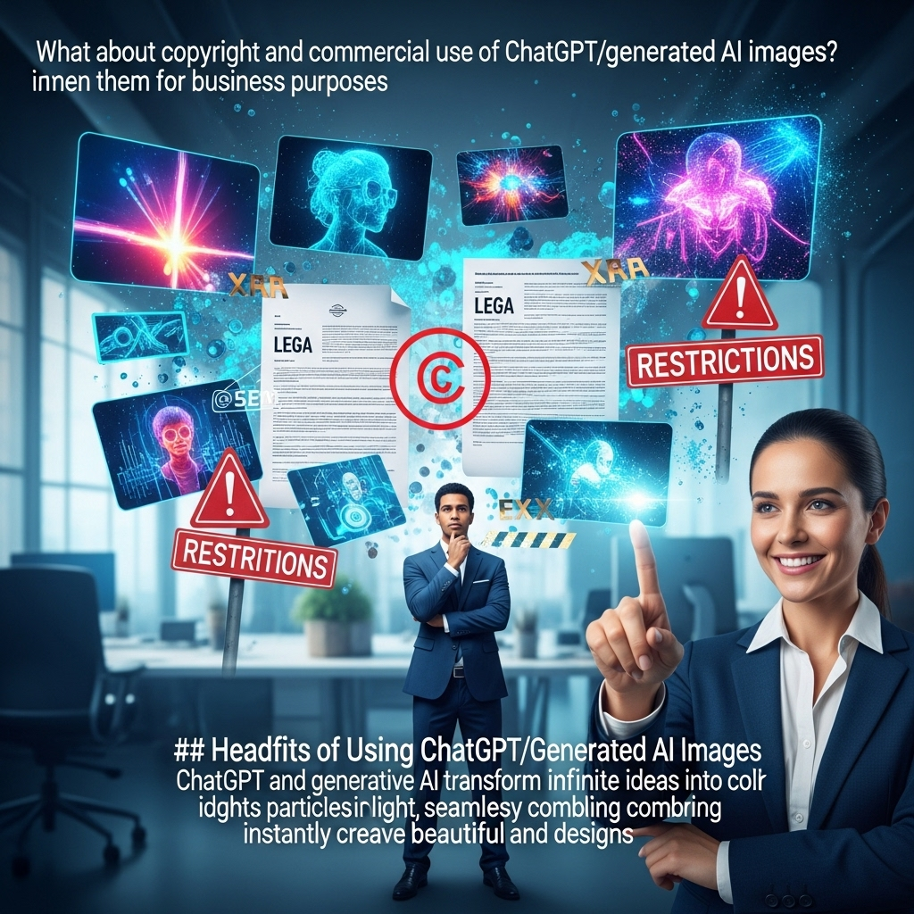
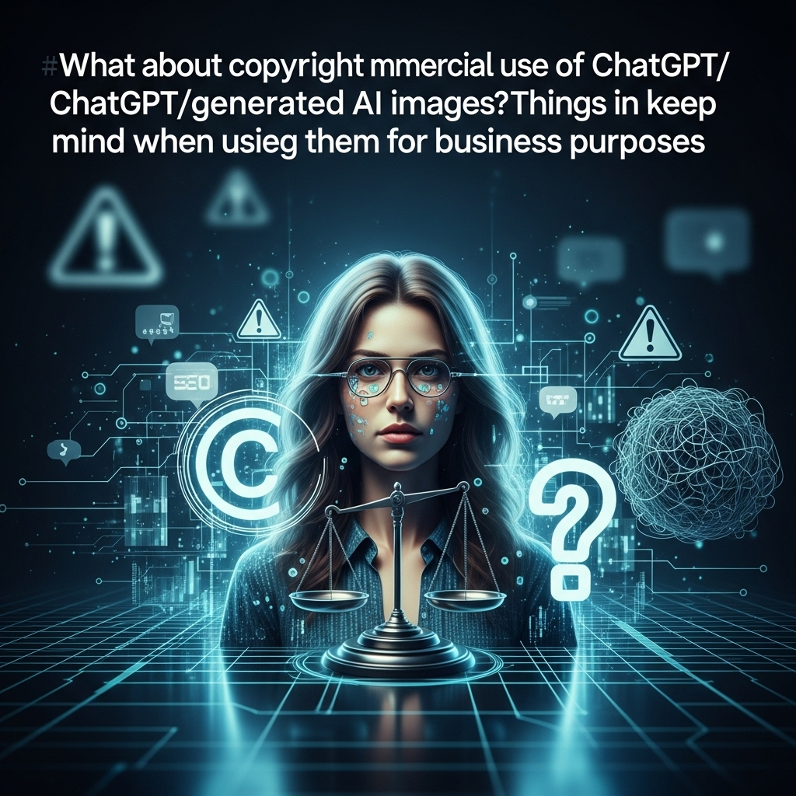
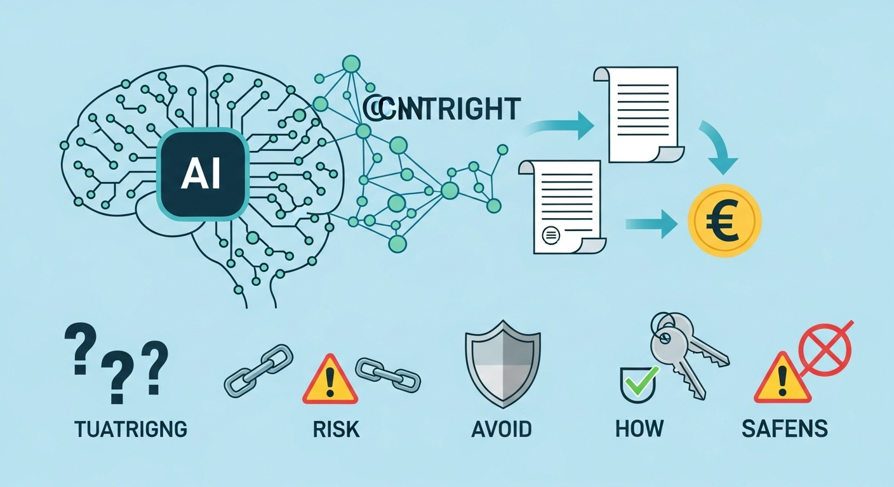

ChatGPT/生成AI画像の著作権と商用利用は？ビジネス活用時の注意点

近年、AI技術の進化は目覚ましく、特に画像生成AIは私たちのクリエイティブな活動に革命をもたらしつつあります。ChatGPTに代表される生成AIがテキストだけでなく画像を生成できるようになったことで、ビジネスシーンにおけるコンテンツ作成の効率化や表現の多様化への期待は高まるばかりです。しかし、この新たな技術の恩恵を最大限に享受するためには、避けて通れない重要な課題があります。それは、「AIが生成した画像の著作権は誰に帰属するのか？」そして「それらの画像をビジネスで商用利用することは可能なのか？」という問いです。
これらの問いは、技術の進歩に法整備が追いついていない現代において、多くの企業やクリエイターが直面する共通の悩みでもあります。誤った認識や不注意な利用は、予期せぬ著作権侵害のリスクや法的なトラブル、さらにはブランドイメージの毀損に繋がりかねません。
本記事では、ChatGPTをはじめとする生成AIが作成した画像の著作権に関する現在の考え方、商用利用の可否を判断するためのポイント、そしてビジネスで活用する際の具体的な注意点から、メリット・デメリット、さらには安全な利用方法まで、網羅的に深く掘り下げて解説していきます。落ち着いたトーンで、しかししっかりと、そして優しく親しみやすい雰囲気で、皆さまが安心してAI画像生成技術をビジネスに活用できるよう、丁寧にガイドしてまいります。この情報が、皆さまのビジネスにおけるAI活用の一助となれば幸いです。
AI生成画像の著作権の考え方
AIが生成した画像に著作権が認められるのか、あるいは誰にその権利が帰属するのかという問題は、AI技術の進化とともに急速に浮上した、まだ明確な法的結論が出ていない領域です。しかし、現在の法制度や各国の見解、そして生成AIサービスの利用規約から、いくつかの重要な考え方を導き出すことができます。ここでは、その基本的な考え方について詳しく見ていきましょう。
考え方１．AI生成物の著作権に関する現在の見解
現在の著作権法は、基本的に「人間が創作した著作物」を保護の対象としています。日本の著作権法第2条第1項では、「著作物とは、思想又は感情を創作的に表現したものであって、文芸、学術、美術又は音楽の範囲に属するものをいう。」と定義されています。この定義において重要なのは、「思想又は感情」という部分です。これは、著作物が人間の内面的な精神活動から生み出されるものであることを前提としています。
AIは、与えられたデータやアルゴリズムに基づいて画像を生成しますが、そこに「思想や感情」があるとは一般的には考えられていません。AIは、人間が設定したプロンプト（指示）や学習データに基づいて、パターンを認識し、新たな画像を「生成」するツールであり、自律的に「創作」しているわけではないという見方が主流です。
このため、現時点での一般的な見解としては、AIが完全に自律的に生成した画像には、著作権は発生しないとされています。なぜなら、著作権の根幹にある「創作性」は、人間の精神活動に由来するという考えが強く、AIの生成プロセスはこれに該当しないとされるからです。しかし、これはAIが生成した画像がすべて著作権フリーであるという意味ではありません。重要なのは、その生成過程に人間がどれだけ関与したか、という点です。
例えば、人間が具体的な意図を持ってAIに詳細なプロンプトを与え、試行錯誤を重ねて特定の表現を実現した場合、その成果物には人間の創作性が認められる可能性があります。この場合、AIはあくまで人間の意図を実現するための「道具」として機能したと解釈され、その結果生み出された画像に著作権が発生する可能性が出てくるのです。
このように、AI生成物の著作権に関する現在の見解は、「AI単独での創作物には著作権は発生しない」という原則と、「人間の創作的寄与の度合いによっては著作権が発生しうる」という例外的な解釈が混在している状況と言えます。この複雑な状況が、ビジネス活用における判断を難しくしている要因の一つです。
考え方２．著作権発生の条件とAI生成物
著作権が発生するためには、いくつかの条件を満たす必要があります。前述の通り、日本の著作権法では「思想又は感情を創作的に表現したもの」であることが大前提です。この「創作性」とは、一般的に「作者の個性が現れていること」と解釈されます。誰が作っても同じような表現になるようなもの（例えば、時刻表や単なるデータ羅列など）には、創作性が認められず、著作権は発生しません。
AI生成物とこの著作権発生の条件を照らし合わせると、いくつかの論点が見えてきます。
- 思想又は感情の有無: AIには人間のような思想や感情がありません。AIは与えられたデータから学習し、統計的なパターンに基づいて画像を生成します。そのため、AIが自律的に生成した画像は、この条件を満たさないと考えるのが自然です。
-
創作性の有無: AIが生成する画像は、学習データから得られた特徴を組み合わせて新しい画像を「生成」します。これは、既存の要素の再構成や模倣の延長線上にあると捉えられがちです。一方で、人間がプロンプトを工夫し、AIに何度も指示を出し、意図する表現に近づける過程では、人間の個性や選択、判断が大きく関わります。この人間の関与が深ければ深いほど、創作性が認められる可能性が高まります。
- プロンプトによる創作性: 例えば、「夕焼け空の下、桜並木を歩く猫のシルエットを、浮世絵風に描いて」といった具体的な指示を出す場合、その指示自体に人間の創作的な意図が込められています。さらに、生成された複数の画像の中から「この構図がいい」「もう少し色彩を鮮やかに」といった選択や修正指示を繰り返すことで、最終的な画像には人間の美的判断や表現意図が強く反映されます。このようなプロセスを経た画像は、AIが単なる道具として使われた結果であり、その創作性はプロンプトを作成し、生成プロセスを指揮した人間に帰属すると考えられます。
- AIの自律性との境界: しかし、AIの性能が向上し、より複雑な指示や抽象的な指示からでも、人間が想像もしなかったような独創的な画像を生成するようになった場合、どこまでを人間の創作と見なすかという境界線は曖昧になります。現行法では、この曖昧さに対応しきれていないのが現状です。
このように、著作権発生の条件をAI生成物に当てはめると、AIが完全に自律的に生成した場合には著作権は発生せず、人間が創作的な意図を持ってAIを「道具」として活用し、その過程で人間の個性や判断が大きく反映された場合には、著作権が発生し、その権利は人間（プロンプト作成者など）に帰属すると考えられるのが、現在の一般的な見解です。
考え方３．生成AIサービスの規約による著作権の扱い
AI生成画像の著作権を考える上で、非常に重要な要素となるのが、各生成AIサービスが定める「利用規約（Terms of Service）」です。法的な解釈がまだ確立されていない現状において、サービスの利用規約は、そのサービスを利用して生成された画像の権利関係を規定する、最も直接的なルールとなります。
利用規約における著作権の扱いは、サービス提供者によって大きく異なります。主なパターンとしては、以下の3つが挙げられます。
- 利用者（プロンプト作成者）に著作権が帰属する: 最も一般的なパターンの一つです。OpenAIのDALL-EやChatGPT Plusの画像生成機能、Midjourney、Stable Diffusion（特定のモデルや利用形態による）など、多くの主要なサービスが、ユーザーが生成した画像に関する権利（著作権、商用利用権など）をユーザー自身に帰属させると規定しています。これは、ユーザーがAIをツールとして活用し、その創作的な意図が画像に反映されたと見なす考え方に基づいています。この場合、ユーザーは生成した画像を自由に利用・改変・配布・商用利用することができますが、同時に、生成物が第三者の著作権を侵害しないよう注意する責任も負います。
- サービス提供者（AI開発企業）に著作権が帰属する: 一部のサービスでは、生成された画像の著作権がサービス提供者自身に帰属すると定めている場合があります。これは、AIが生成した画像は、そのAIを開発した企業の知的財産であるという考え方に基づいています。この場合、ユーザーは生成された画像を個人的に利用することはできても、商用利用や大規模な配布には制限がかかるか、別途ライセンス契約が必要となることがあります。利用規約をよく確認し、どのような利用が許されているのかを把握することが不可欠です。
- 著作権が発生しない、またはパブリックドメインとなる: 非常に稀なケースですが、生成された画像には著作権が発生しない（パブリックドメインとして扱われる）と明示しているサービスもあります。これは、AI生成物は著作権法の保護対象とならないという法的見解を前提としているか、あるいは、より広範な利用を促進するための意図がある場合です。この場合、誰でも自由に画像を複製・利用できますが、権利を主張する主体がいないため、万が一のトラブル時における保護が手薄になる可能性もあります。
利用規約を確認する際のポイント:
- 著作権の帰属: 生成された画像の著作権が誰に帰属するのか（利用者、サービス提供者、または非発生）。
- 商用利用の可否: サービスを利用して生成した画像を、営利目的で利用できるのかどうか。利用可能な場合、どのような条件や制限があるのか。
- 改変・二次利用の範囲: 生成された画像を改変したり、他の作品の一部として利用したりすることが許されているか。
- 学習データに関する規定: AIがどのようなデータを学習元としているか、そのデータの著作権処理について言及があるか。
- 責任の所在: 生成された画像が著作権侵害などの法的問題を引き起こした場合、誰が責任を負うのか。
これらの利用規約は、AI技術の進展や法整備の動向に合わせて頻繁に更新される可能性があります。そのため、サービスを継続的に利用する際には、定期的に最新の利用規約を確認する習慣をつけることが非常に重要です。ビジネスでAI生成画像を活用する際には、まず利用するサービスの規約を熟読し、その内容を正確に理解することが、法的なリスクを回避するための第一歩となります。
ChatGPT画像の商用利用の可否

AIが生成した画像が著作権を持つかどうかという問題と並んで、ビジネスにおいて最も実用的な関心事となるのが、「生成した画像を商用利用できるのか？」という点です。ChatGPTの画像生成機能や、DALL-Eなどの主要な画像生成AIツールで作成した画像を、広告、ウェブサイト、商品デザインなど、営利目的で利用できるかどうかは、企業のAI活用戦略を左右する重要な判断基準となります。ここでは、その可否を判断するための具体的なポイントと、主要ツールの状況について詳しく解説します。
可否判断１．OpenAIの利用規約の確認
ChatGPT Plusなどの有料プランで提供される画像生成機能（DALL-E 3を基盤とする）や、DALL-E単体サービスを利用して画像を生成する場合、その商用利用の可否は、OpenAIの利用規約（Terms of Use）に明確に記載されています。
OpenAIの利用規約は、AI生成物の権利帰属に関して、比較的ユーザーフレンドリーな方針を取っています。具体的には、OpenAIの規約では、ユーザーが自らのアカウントを通じて生成したコンテンツ（画像を含む）の所有権は、原則としてユーザーに帰属するとされています。
OpenAIの利用規約における重要なポイント（2023年10月時点の一般的な解釈に基づく）:
- コンテンツの所有権（Ownership of Content）: ユーザーがAPIを通じて、またはChatGPTなどのサービスを利用してコンテンツを作成した場合、そのコンテンツの所有権はユーザーに帰属します。これは、生成されたテキストや画像など、あらゆる出力物に対して適用されます。
- 商用利用の許可: ユーザーに所有権が帰属するため、生成されたコンテンツを商用目的で利用することも原則として許可されています。広告、マーケティング素材、ウェブサイトのデザイン、商品パッケージ、出版物など、ビジネス活動全般での利用が可能です。
- OpenAIの権利: ただし、OpenAIもユーザーが生成したコンテンツを、サービスの改善や開発、安全性確保のために利用する権利を留保している場合があります。これは、匿名化されたデータとして学習に利用される可能性などを意味します。
- 責任の所在: ユーザーは、生成されたコンテンツが第三者の著作権やその他の権利を侵害しないよう、また、不法なコンテンツや有害なコンテンツを含まないよう、責任を負うことが明記されています。もし生成物が問題を引き起こした場合、その責任はユーザーにあるという認識を持つ必要があります。
確認すべき具体的な箇所:
利用規約は変更される可能性があるため、常に最新版を確認することが重要ですが、特に以下の項目に注目してください。
- 「Content」（コンテンツ）または「Your Content」（あなたのコンテンツ）に関するセクション
- 「Intellectual Property Rights」（知的財産権）に関するセクション
- 「Commercial Use」（商用利用）に関する言及
これらのセクションに目を通し、ご自身の利用目的が規約の範囲内であるかを確認することが、OpenAIのAI生成画像を安心して商用利用するための第一歩となります。
万が一、規約の内容が不明瞭な場合や、特定の利用方法について確信が持てない場合は、OpenAIの公式サポートに問い合わせるか、法律の専門家に相談することを検討しましょう。
可否判断２．商用利用の可否を判断するポイント
AI生成画像を商用利用できるかどうかは、単に「利用規約で許可されているか」だけでなく、いくつかの複合的な要素を考慮して判断する必要があります。以下に、商用利用の可否を判断する上で重要なポイントを挙げます。
- 利用するAIサービスの利用規約・ライセンス: 最も基本的な判断基準です。前述のOpenAIの規約のように、多くのサービスは「ユーザーに権利を帰属させ、商用利用を許可する」としていますが、中には個人利用のみ許可、あるいは特定の条件（クレジット表示、収益額の上限など）付きで商用利用を許可するサービスも存在します。必ず、利用するAIサービスの最新の利用規約を熟読し、商用利用が明確に許可されているか、どのような条件があるのかを確認してください。
-
プロンプト（指示）の内容:
生成された画像が著作権侵害のリスクを抱えるかどうかは、ユーザーがAIに与えたプロンプトの内容に大きく左右されます。
- 既存の著作物やブランド名を直接的に指定していないか: 例えば、「〇〇（有名キャラクター）のような画像」「〇〇（有名アーティスト）のスタイルで」といった指示は、生成された画像が既存の著作物に酷似する可能性を高め、著作権侵害のリスクを増大させます。
- 具体的な個人名や固有のデザインを指示していないか: 特定の人物の肖像権や、企業のロゴ・商標権を侵害する可能性のあるプロンプトも避けるべきです。
- 汎用的で抽象的な指示か: 「夕焼けのビーチ」「未来都市の風景」といった、一般的なテーマや抽象的な概念を指示するプロンプトは、既存の著作物との類似性が低く、著作権侵害のリスクを減らすことができます。
-
生成された画像の独自性・類似性:
AIによって生成された画像が、偶然または意図せず、既存の著作物に酷似している場合があります。
- 既存の作品との類似性チェック: 生成された画像が、インターネット上や既存のメディアで公開されている他の作品と著しく似ていないか、目視や画像検索ツールなどを利用して確認することが重要です。特に、有名キャラクターやロゴ、特徴的なデザインに似ていないかを注意深くチェックしましょう。
- 創作的寄与の度合い: 生成された画像に、ユーザー自身の思想や感情、表現意図がどれだけ反映されているか、つまり「人間の創作的寄与」がどれだけあるかという点も、著作権発生の可能性と商用利用の安全性を判断する上で考慮すべき要素です。単にプロンプトを入力しただけで生成されたものと、何度も修正指示を出し、意図した表現に近づけたものとでは、法的評価が異なる可能性があります。
- AIの学習元データに関する情報: AIが学習に使用したデータセットが、著作権処理のされていない素材を含んでいた場合、生成された画像もその学習元データの著作権に影響を受ける可能性があります。多くの商用AIサービスは、著作権処理済みのデータセットを使用していると主張していますが、その透明性は常に確認すべき点です。学習元データに問題がある場合、生成された画像が意図せず著作権侵害を引き起こすリスクがあります。
これらのポイントを総合的に判断し、リスクを最小限に抑えながらAI生成画像を商用利用することが、ビジネスにおける賢明な戦略と言えるでしょう。
可否判断３．主要AI画像生成ツールの商用利用状況
現在、様々なAI画像生成ツールが登場しており、それぞれが異なる利用規約やライセンスモデルを持っています。ビジネスでこれらのツールを活用する際には、各ツールの商用利用状況を正確に把握することが不可欠です。以下に、主要なAI画像生成ツールの商用利用に関する一般的な状況をまとめます。（情報は2023年10月時点のものであり、規約は変更される可能性があるため、必ず最新の公式情報を確認してください。）
-
ChatGPT Plus (DALL-E 3):
- 商用利用: 原則として可能。
- 権利帰属: ユーザー（プロンプト作成者）に帰属。
- 補足: OpenAIの利用規約に基づき、ユーザーが生成したコンテンツの所有権はユーザーにあり、商用利用も許可されています。ただし、生成物が第三者の権利を侵害しないよう、ユーザーが責任を持つ必要があります。
-
Midjourney:
- 商用利用: 有料プランの加入者は可能。無料プランでは商用利用に制限があるか、不可の場合が多いです。
- 権利帰属: 有料プランの場合、原則としてユーザーに帰属。
- 補足: Midjourneyはプランによって利用規約が異なります。無料トライアルユーザーは商用利用が厳しく制限されることが多いですが、有料プランに加入すると、生成した画像を商用目的で自由に利用できるケースがほとんどです。ただし、生成物を公開する際には、Midjourneyの利用規約に準拠する必要があります。
-
Stable Diffusion (Stability AI):
- 商用利用: 基本的に可能。
- 権利帰属: ユーザー（生成者）に帰属。
- 補足: Stable Diffusion自体はオープンソースのモデルであり、その派生モデルやサービスは多数存在します。Stability AIが提供するDreamStudioなどのサービスでは商用利用が許可されています。また、ローカル環境でStable Diffusionを実行する場合、生成された画像の権利は生成者に帰属し、商用利用も自由に行えます。ただし、モデルによっては特定のライセンス（CreativeML Open RAIL-M Licenseなど）が適用され、特定の用途（違法行為、差別的コンテンツの生成など）が制限される場合があります。
-
Adobe Firefly:
- 商用利用: 原則として可能。
- 権利帰属: ユーザー（生成者）に帰属。
- 補足: Adobe Fireflyは、Adobe Stockのデータなど、著作権処理済みのデータのみを学習元としていることを明確に打ち出しており、商用利用における著作権リスクを低減する努力をしています。生成された画像には「コンテンツクレデンシャル」として、AIによって生成された情報が付与されるため、透明性が高いのが特徴です。Adobe Creative Cloudのサブスクリプションに含まれる形で提供されることが多く、既存のAdobe製品との連携もスムーズです。
-
CanvaのMagic Media (DALL-EやStable Diffusionベース):
- 商用利用: 原則として可能。
- 権利帰属: ユーザー（生成者）に帰属。
- 補足: Canvaの利用規約に基づき、ユーザーが作成したデザイン（AI生成画像を含む）は商用利用が可能です。Canvaはデザインツールとして広く利用されており、AI画像生成機能もその一環として提供されています。
まとめと注意点:
- 利用規約の確認は必須: 上記は一般的な状況であり、サービスの利用規約は頻繁に更新される可能性があります。ビジネスで利用する際は、必ず最新の公式利用規約を確認し、不明な点があればサービス提供者に問い合わせてください。
- 無料版と有料版の違い: 多くのサービスで、無料版と有料版では商用利用の可否や範囲が異なります。商用利用を前提とする場合は、有料プランへの加入を検討しましょう。
- 責任の所在: 多くのサービスが生成された画像の権利をユーザーに帰属させる一方で、その画像が第三者の著作権を侵害した場合の責任はユーザーにあります。この点を十分に理解し、リスク管理を徹底することが重要です。
これらの情報を参考に、ご自身のビジネスニーズに合ったAI画像生成ツールを選び、安全かつ効果的に活用してください。
AI生成画像と著作権の法的側面

AI生成画像に関する著作権の問題は、技術の進歩が先行し、法整備が追いついていない現代社会における大きな課題の一つです。しかし、既存の著作権法を基盤として、文化庁などの公的機関が見解を示すことで、徐々にその法的側面が明らかになりつつあります。ここでは、日本の著作権法における「著作物」の定義から、AI生成画像が著作物となるかどうかの解釈、そして文化庁の見解と今後の動向について深く掘り下げて解説します。
法的側面１．著作権法における「著作物」の定義
日本の著作権法は、著作権の保護対象となる「著作物」を明確に定義しています。著作権法第2条第1項第1号によれば、
「著作物とは、思想又は感情を創作的に表現したものであって、文芸、学術、美術又は音楽の範囲に属するものをいう。」
この定義を細かく分解し、それぞれの要素が何を意味するのかを理解することが、AI生成画像の法的評価を行う上で非常に重要です。
- 思想又は感情: これは、著作物が人間の精神活動の所産であるという根本原則を示しています。著作物は、作者の内面的な意思や感動、思考が表現されたものである必要があります。単なる事実の羅列や、誰が表現しても同じになるような客観的な情報には、「思想又は感情」が認められません。AIが生成する画像は、アルゴリズムに基づいていますが、AI自身に「思想や感情」があるとは現在のところ考えられていません。
- 創作的に表現したもの: 「創作性」とは、作者の個性や独創性が表現に現れていることを指します。これは、必ずしも芸術的な価値や斬新さが必要というわけではありません。既存の作品の模倣やコピーではなく、作者自身の工夫や選択、判断が反映されていれば、創作性は認められます。ただし、極めてありふれた表現や、表現の選択肢がほとんどないようなものには、創作性は認められません。 AI生成画像の場合、プロンプトの入力や生成過程における人間の選択・修正が、この「創作性」に繋がりうるかどうかが焦点となります。人間がAIを「道具」として使い、具体的な意図を持って試行錯誤を重ねた結果、作者の個性が表現に現れたと評価できるかどうかが鍵です。
- 文芸、学術、美術又は音楽の範囲に属するもの: これは、著作物の種類を例示的に示しています。小説、詩、論文、絵画、彫刻、写真、映画、楽曲などがこれに該当します。AIが生成する画像は、その性質上「美術」の範囲に属すると考えられます。重要なのは、この範囲に属することだけでなく、上記2つの要素（思想又は感情、創作性）も満たしていることです。
まとめると、日本の著作権法において著作物と認められるためには、「人間が、自身の思想や感情を、独自の工夫や選択によって、特定の形式（文芸、学術、美術、音楽など）で表現したもの」である必要があります。 AI生成画像がこの定義に当てはまるかどうかは、その生成過程における人間の関与の度合いによって判断が分かれることになります。
法的側面２．AIが生成した画像が著作物となるか
前述の著作権法の定義を踏まえ、AIが生成した画像が法的に著作物として認められるかどうかの具体的な解釈を深掘りします。現在の日本の法解釈では、以下の3つのパターンが考えられます。
-
AIが自律的に生成し、人間の創作的寄与が認められない場合:
このケースでは、AIが完全に自動的に、あるいは極めて一般的な指示（例：「風景を描いて」）に基づいて画像を生成し、その過程で人間が具体的な意図を持って表現を追求するような関与がほとんどなかった場合を指します。
- 解釈: このような画像は、AIが学習データに基づいてパターンを再構成した結果であり、「思想又は感情」を伴う「創作的な表現」とは認められません。したがって、著作物とはならず、著作権は発生しないと解釈されるのが現在の主流の見解です。この場合、生成された画像は誰でも自由に利用できる「パブリックドメイン」のような状態に近いと考えられます。
-
人間がAIを道具として活用し、創作的寄与が認められる場合:
このケースは、人間がAIに対して具体的かつ詳細なプロンプトを与え、生成された画像の中から選択・修正を指示したり、複数の画像を組み合わせて最終的な作品を作り上げたりするなど、人間の意図や個性が強く反映されるプロセスを経た場合を指します。AIはあくまで、人間の創作意図を実現するための「ツール」として機能します。
- 解釈: この場合、生成された画像は人間の著作物として認められ、著作権はプロンプトを作成し、生成プロセスを指揮した人間に帰属すると考えられます。人間の「思想又は感情」がプロンプトや選択、修正という形で「創作的に表現」されたと評価されるためです。例えば、写真家がカメラという道具を使って作品を撮影し、その写真に著作権が発生するのと同じような考え方です。
- 判断の難しさ: しかし、どこからどこまでが人間の創作的寄与と見なされるかという境界線は非常に曖昧です。プロンプトの具体性、試行錯誤の回数、最終的な修正の度合いなど、個別のケースによって判断が分かれる可能性があります。
-
既存の著作物をAIが学習し、酷似した画像を生成した場合:
これは、著作権の発生とは別に、著作権侵害の問題として捉えるべきケースです。
- 解釈: AIが学習したデータの中に既存の著作物が含まれており、その影響で生成された画像が、既存の著作物と「依拠性（既存の著作物に依拠して作成されたこと）」と「類似性（既存の著作物と本質的特徴が共通すること）」の両方を満たす場合、著作権侵害となる可能性があります。たとえ生成された画像自体に著作権が発生しないとしても、既存の著作権者の権利を侵害することには変わりありません。この場合、AIを指示した人間が著作権侵害の責任を問われる可能性があります。
現状では、AI生成画像が著作物となるか否かは、その生成過程における「人間の創作的寄与の度合い」が極めて重要な判断基準となります。完全にAI任せの生成物には著作権は発生せず、人間が深く関与した生成物には著作権が発生しうる、というのが現在の一般的な法解釈です。
法的側面３．文化庁の見解と今後の動向
AI生成画像に関する著作権の法的側面は、まだ確立された判例が少ないため、各国の文化行政機関や政府の見解が重要な指針となります。日本においては、文化庁が「AIと著作権に関する考え方について」と題する資料を公表し、その見解を示しています。
文化庁の見解（2023年時点の一般的な解釈）の要点:
- 原則として「人間の創作性」が前提: 文化庁は、著作権法における「著作物」は、原則として人間の思想又は感情を創作的に表現したものであることを改めて強調しています。AI自体には思想や感情がないため、AIが完全に自律的に生成した画像には著作権は発生しないという立場を明確にしています。
- 人間の創作的寄与の重要性: しかし、AIが生成した画像であっても、その生成過程において人間が具体的な意図を持って、プロンプトの作成、生成された画像の選択、修正、加工などを行い、その結果として「人間の思想又は感情が創作的に表現された」と認められる場合には、その画像に著作権が発生し、その権利は当該人間（プロンプト作成者や編集者など）に帰属するとしています。
- 学習段階における著作権侵害の可能性: AIが学習する際に既存の著作物を利用することについては、著作権法30条の4（情報解析のための複製等）の規定により、原則として著作権者の許諾なく利用できる場合があるとしています。しかし、これはあくまで「情報解析」を目的とした利用に限られ、学習によって生成された画像が既存の著作物と酷似し、著作権侵害となる場合は、別途判断されることになります。
- AI生成物の著作権侵害リスク: AIが生成した画像が、既存の著作物と類似し、かつ依拠性（既存の著作物に基づいて作成されたこと）が認められる場合には、著作権侵害となる可能性があることを指摘しています。この場合、AIを指示した人間が責任を負う可能性があるとして、注意を促しています。
今後の動向:
AI技術は日進月歩で進化しており、法整備がこの速度に追いつくことは容易ではありません。しかし、文化庁の見解は、現行法の枠組みの中でAI生成物の著作権をどのように解釈すべきかについて、一定の方向性を示すものです。
- 国際的な議論: 各国でも同様の議論が活発に行われており、国際的な調和を図りながら、新たな法制度やガイドラインが策定されていく可能性があります。
- 判例の蓄積: 今後、AI生成物に関する著作権侵害訴訟が増加することで、具体的な判例が蓄積され、より明確な法的解釈が示されていくことが期待されます。
- 法改正の可能性: AIの自律性がさらに高まり、人間の関与が極めて限定的であっても、独創的で芸術的な作品が生成されるようになった場合、現行の著作権法の枠組みでは対応しきれない可能性があります。その際には、著作権法の改正や新たな法律の制定が検討されることも考えられます。
企業やクリエイターがAI生成画像をビジネスで活用する際には、これらの文化庁の見解や今後の動向を常に注視し、法的リスクを最小限に抑えるための適切な対応を取ることが求められます。現状では、「人間の創作的寄与」が著作権発生の鍵であるという認識を強く持つことが重要です。
ビジネス活用時の注意点
AI生成画像をビジネスで活用することは、効率化やコスト削減、表現の多様化など多くのメリットをもたらしますが、同時に潜在的なリスクも伴います。特に著作権に関する問題は、企業の法的責任やブランドイメージに直結するため、細心の注意が必要です。ここでは、ビジネス活用時に特に留意すべき4つの注意点について詳しく解説します。
注意点１．プロンプトに著作物を含めない
AI画像生成において、ユーザーが入力する「プロンプト（指示文）」は、生成される画像の品質や特性を決定する上で極めて重要です。しかし、このプロンプトの作成方法を誤ると、意図せず著作権侵害のリスクを高めてしまう可能性があります。
具体的なリスクと回避策:
-
有名キャラクターやブランド名の直接指定を避ける:
「ピカチュウのようなキャラクター」「ミッキーマウス風のイラスト」といった、既存の有名キャラクター名やブランド名をプロンプトに含めることは、著作権侵害のリスクを著しく高めます。AIは学習データからそのキャラクターの特徴を抽出し、酷似した画像を生成する可能性が高いからです。
- 回避策: 特定のキャラクターやブランドを連想させるような具体的な固有名詞の使用は避けましょう。代わりに、「黄色い電気ネズミ」「耳の大きな黒いシルエットのキャラクター」のように、特徴を抽象的に表現するにとどめるか、全く異なるイメージを指示するようにしましょう。
-
特定のアーティストの画風やスタイルを指定する際の注意:
「ゴッホ風の星空」「スタジオジブリ風の風景」のように、特定のアーティストやアニメスタジオの画風やスタイルをプロンプトに指定することも、著作権侵害のリスクを伴います。スタイル自体は著作権の保護対象とはならないとされていますが、そのスタイルを模倣した結果、既存の作品と酷似した画像が生成された場合、著作権侵害と判断される可能性があります。
- 回避策: 特定のアーティスト名を避けるか、より一般的な画風（例：「印象派風」「水彩画風」）や、複数のアーティストのスタイルを組み合わせることで、特定の作品への依拠性を低減させましょう。また、生成された画像が特定の作品に酷似していないか、入念に確認するプロセスが不可欠です。
-
既存の作品や写真の描写をそのまま指示しない:
インターネット上の既存の写真やイラストの描写を詳細にプロンプトとして入力し、それと瓜二つの画像を生成させようとする行為も、著作権侵害に繋がります。
- 回避策: 既存の作品を参考にすることはあっても、その描写をそのままAIに指示するのではなく、自身のオリジナルのアイデアや要素を加えて、全く新しいイメージを生成するように心がけましょう。
プロンプト作成の心構え:
プロンプトを作成する際には、「この指示で生成される画像は、既存の何かの模倣になっていないか？」という視点を常に持ち続けることが重要です。AIはあくまでツールであり、その出力結果の著作権侵害リスクは、指示を出した人間に帰属する可能性が高いことを忘れてはなりません。オリジナリティを追求し、独自の表現を生み出すためのプロンプト作成を心がけることが、安全なAI画像活用への鍵となります。
注意点２．生成された画像の確認
AIにプロンプトを与えて画像を生成した後、その画像をそのままビジネスに利用する前に、必ず徹底した確認作業を行うことが極めて重要です。なぜなら、たとえプロンプトに著作物を含めなかったとしても、AIが学習データに含まれる既存の著作物の特徴を偶然抽出してしまい、意図せず酷似した画像を生成してしまう可能性があるからです。
確認すべき具体的なポイントと方法:
-
既存の著作物との類似性チェック:
- 目視確認: 生成された画像が、インターネット上や既存のメディアで広く知られているキャラクター、ロゴ、デザイン、特定の構図、色彩パターンなどに酷似していないか、入念に目視で確認します。特に、有名IP（知的財産）やブランド、人気のあるイラストレーターの作品などに似ていないかを注意深くチェックしましょう。
- 画像検索ツールの活用: Google画像検索の「画像で検索」機能や、Tineyeなどの逆引き画像検索ツールを活用して、生成された画像が既存の画像とどの程度類似しているかを確認します。これにより、意図せず既存の著作物と酷似した画像が生成されていないか、客観的に判断する手助けとなります。
- 複数人でのチェック: 一人だけの目視確認では見落としがあるかもしれません。可能であれば、複数人のチームで画像をチェックし、異なる視点から類似性を評価することが望ましいです。
-
不適切なコンテンツの有無:
- 倫理的な問題: AIは、学習データによっては、差別的、暴力的、性的な表現、あるいは特定の個人を不快にさせるような画像を生成してしまう可能性があります。ビジネスで利用する際には、企業のブランドイメージを損なわないよう、倫理的に問題のあるコンテンツが含まれていないかを厳しくチェックする必要があります。
- ブランドガイドラインとの整合性: 生成された画像が、企業のブランドガイドライン（色彩、トーン＆マナー、メッセージなど）に適合しているかを確認します。意図しない表現や、ブランドイメージにそぐわない画像は、利用を避けるべきです。
-
品質と利用目的への適合性:
- 技術的品質: 解像度、画質、構図、細部の描写など、ビジネス利用に耐えうる技術的な品質が確保されているかを確認します。不自然な部分や破綻している箇所がないかもチェックしましょう。
- メッセージ伝達力: その画像が、伝えたいメッセージや意図するターゲット層に適切に響くものであるか、利用目的（広告、ウェブサイト、SNSなど）に合致しているかを評価します。
リスクを最小限に抑えるための体制構築:
- AI生成画像の利用ガイドラインの策定。
- 画像確認のためのチェックリストの作成。
- 複数の承認プロセスを設ける。
- 定期的な従業員への著作権教育の実施。
これらの確認作業と体制構築を徹底することで、AI生成画像を安全かつ効果的にビジネスに活用し、著作権侵害のリスクやブランド毀損のリスクを最小限に抑えることができます。
注意点３．利用規約の変更への対応
AI画像生成サービスは日進月歩で進化しており、それに伴い、各サービスの利用規約やライセンスポリシーも頻繁に更新される可能性があります。ビジネスでこれらのサービスを継続的に利用する場合、利用規約の変更に適切に対応することが極めて重要です。
利用規約変更がビジネスに与える影響:
-
商用利用の可否や条件の変更:
これまで商用利用が許可されていた画像が、規約変更により商用利用不可になったり、追加の条件（クレジット表示の義務化、利用料の発生、特定の用途の制限など）が課されたりする可能性があります。
- 例: 無料プランでは商用利用が禁止され、有料プランへの移行が必須になる、あるいは生成物の権利帰属がユーザーからサービス提供者に変更される、といったケースが考えられます。
- 権利帰属の変更: 生成された画像の著作権が、これまでユーザーに帰属していたものが、サービス提供者に帰属する形に変更されることもありえます。これにより、既存の利用方法が制限されたり、ライセンス契約の再検討が必要になったりする可能性があります。
- 学習データに関するポリシーの変更: AIの学習元データに関するポリシーが変更され、学習データの透明性や著作権処理に関する新たな懸念が生じる可能性もあります。これは、間接的に生成物の著作権リスクに影響を与える可能性があります。
- 責任の所在の変更: 著作権侵害などのトラブル発生時におけるユーザーとサービス提供者の責任分担に関する規定が変更される可能性もあります。
対応策:
- 定期的な利用規約の確認: 利用しているAI画像生成サービスの公式ウェブサイトや、サービス内のお知らせを通じて、利用規約の更新情報を定期的にチェックする習慣をつけましょう。月に一度、あるいは重要なプロジェクトを開始する前など、定期的な確認スケジュールを設定することをお勧めします。
- 変更内容の理解と社内共有: 規約が変更された場合、その内容を正確に理解し、ビジネスへの影響を評価します。特に、商用利用の可否、権利帰属、責任の所在に関する変更は、法務部門や事業責任者と連携し、社内で速やかに共有することが重要です。
- 既存コンテンツへの影響評価: 既にビジネスで利用しているAI生成画像が、新しい規約によって問題が生じないかを確認します。もし問題が生じる可能性がある場合は、その画像の差し替えや利用停止、あるいは別途ライセンス契約を結ぶなどの対応が必要になるかもしれません。
- 柔軟なAIツール選択の準備: 特定のAIサービスに過度に依存せず、複数のAI画像生成ツールの動向を把握しておくことも重要です。もし現在利用しているサービスの規約がビジネスに不利な方向に変更された場合でも、代替となるツールにスムーズに移行できるよう、情報収集を怠らないようにしましょう。
利用規約の変更への対応は、AI生成画像をビジネスで安全かつ継続的に活用するための不可欠な要素です。常に最新の情報をキャッチアップし、柔軟に対応する体制を整えることで、予期せぬリスクを回避し、ビジネスの継続性を確保することができます。
注意点４．著作権侵害のリスク理解
AI生成画像をビジネスで活用する上で、最も深く理解し、常に意識しておくべきは「著作権侵害のリスク」です。このリスクは、企業の法的責任だけでなく、ブランドイメージや社会的信頼性にも大きな影響を及ぼす可能性があります。
著作権侵害が引き起こす具体的なリスク:
-
法的責任と損害賠償:
- 差止請求: 著作権侵害が認められた場合、著作権者からその画像の利用停止（差止）を求められる可能性があります。これにより、製品の回収、広告キャンペーンの中止、ウェブサイトの更新など、多大な時間とコストが発生します。
- 損害賠償請求: 著作権侵害によって著作権者が受けた損害（逸失利益など）に対して、損害賠償を請求される可能性があります。その額は、侵害の規模や期間、著作物の価値によって大きく変動し、数百万から数千万円に及ぶこともあります。
- 信用失墜: 著作権侵害は、企業の社会的信用を大きく損ないます。特に、クリエイティブな分野で事業を展開している企業にとって、著作権に対する軽視は致命的なイメージダウンに繋がりかねません。
- ブランドイメージの毀損: 著作権侵害が公になった場合、企業は「他者の作品を盗用した」という負のイメージを消費者に与えてしまいます。これは、ブランドロイヤルティの低下、顧客離れ、売上の減少に直結する可能性があります。SNSでの炎上やメディアからの批判などにより、回復に多大な時間と労力を要することもあります。
- ビジネス機会の損失: 著作権侵害のリスクを恐れて、AI生成画像の利用を躊躇したり、利用範囲を限定したりすることで、本来得られるはずだったビジネス上のメリット（効率化、コスト削減、多様な表現など）を十分に享受できない可能性があります。
リスクを理解し、低減するための心構え:
- 「AIが作ったから大丈夫」は誤解: AIが生成した画像だからといって、著作権侵害のリスクがないわけではありません。AIは既存のデータを学習しているため、意図せず既存の著作物に似た画像を生成する可能性は常にあります。最終的な利用判断は人間が行い、その責任も人間に帰属するという認識を持つべきです。
- 「知らなかった」では済まされない: 著作権侵害は、故意であるか否かに関わらず成立する可能性があります。「知らなかった」「AIのせいだ」といった言い訳は通用しないことがほとんどです。そのため、事前に十分な確認と対策を行うことが重要です。
- 専門家への相談の検討: 重要なプロジェクトでAI生成画像を多用する場合や、著作権に関する判断に迷う場合は、著作権専門の弁護士やコンサルタントに相談することを検討しましょう。初期段階での専門家のアドバイスは、将来的な大きなリスクを回避するための賢明な投資となります。
- 継続的な学習と情報収集: 著作権法やAI技術、各サービスの利用規約は常に変化しています。最新の情報を継続的に学習し、社内での知識共有を徹底することで、リスクへの対応力を高めることができます。
著作権侵害のリスクを深く理解し、それに対する適切な対策を講じることは、AI生成画像をビジネスで安全かつ持続的に活用するための絶対条件です。リスクを恐れるだけでなく、リスクを管理し、回避するための知識と体制を整えることが、現代のビジネスパーソンには求められています。
ChatGPT/生成AI画像活用のメリット

AI画像生成技術は、ビジネスにおけるコンテンツ作成の常識を大きく変えつつあります。適切な理解と運用のもとで活用すれば、企業に計り知れないメリットをもたらす可能性を秘めています。ここでは、ChatGPTをはじめとする生成AI画像をビジネスで活用することによって得られる主なメリットについて、具体的に見ていきましょう。
メリット１．コンテンツ作成の効率化とコスト削減
AI画像生成技術の導入は、ビジネスにおけるコンテンツ作成プロセスに革命をもたらし、劇的な効率化とコスト削減を実現します。これは、特に視覚的コンテンツが重要となる現代のデジタルマーケティングにおいて、企業競争力を高める上で非常に大きなメリットとなります。
-
デザイン制作の時間短縮:
- 迅速なアイデア具現化: 従来の画像制作では、アイデア出しからラフスケッチ、デザイン、修正、最終納品までに数日、場合によっては数週間を要することがありました。しかし、AI画像生成ツールを使えば、テキストプロンプトを入力するだけで、数秒から数分で多様なデザイン案を生成できます。
- 試行錯誤の加速: 複数のデザイン案を短時間で生成し、比較検討できるため、アイデアの具現化から最終決定までのサイクルが大幅に短縮されます。これにより、マーケティングキャンペーンの立ち上げや、ウェブサイトのリニューアルなど、スピードが求められるプロジェクトにおいて大きな威力を発揮します。
- コンテンツの量産: SNS投稿用の画像、ブログ記事のアイキャッチ、広告バナーなど、日々大量に必要となるビジュアルコンテンツを効率的に量産することが可能になります。
-
外注コストと人件費の削減:
- フリーランスやデザイン会社への外注費削減: 従来、高品質な画像を制作するためには、プロのデザイナーやデザイン会社に外注するのが一般的でした。しかし、AI画像生成ツールを活用すれば、内製で多くのビジュアルコンテンツを制作できるようになり、高額な外注費を大幅に削減できます。
- 社内リソースの最適化: 社内のデザイナーがAIツールを導入することで、単純な画像制作作業から解放され、より創造的で戦略的なデザイン業務に集中できるようになります。これにより、デザイナーの生産性向上と、企業全体のクリエイティブな価値向上に貢献します。
- 画像素材購入費の削減: ストックフォトサービスから画像を購入する費用も、AI生成画像で代替できる場面が増えるため、削減が期待できます。特定のニーズに合致する画像が見つからない場合でも、AIに生成させることで、理想に近い画像を低コストで手に入れることができます。
-
専門知識やスキルの障壁の低下:
- 非デザイナーでも高品質な画像を生成可能に: 高度なデザインソフトウェアの操作スキルやデザイン理論の知識がなくても、テキストプロンプトを工夫するだけで、プロフェッショナルな品質に近い画像を生成できるようになります。これにより、マーケターやコンテンツライターなど、デザイン専門職ではない社員でも、必要なビジュアルコンテンツを自ら作成できるようになり、業務の幅が広がります。
このように、AI画像生成技術は、コンテンツ作成のプロセスを根本から見直し、企業にとって時間とコストの両面で大きなメリットをもたらします。これにより、ビジネスはより迅速に、より効率的に、そしてより経済的に、魅力的なビジュアルコンテンツを提供できるようになるのです。
メリット２．多様なビジュアル表現の実現
AI画像生成技術の導入は、これまで想像もつかなかったような多様なビジュアル表現を可能にし、クリエイティブの可能性を大きく広げます。これは、企業のブランドイメージ構築や顧客エンゲージメント向上において、非常に強力な武器となり得ます。
-
クリエイティブの幅の拡大とアイデアの具現化:
- 無限のスタイルとテーマ: AIは、写実的な写真から、水彩画、油絵、ピクセルアート、サイバーパンク、ファンタジー、抽象画など、ありとあらゆるスタイルやテーマの画像を生成できます。これにより、デザイナーは既存の枠にとらわれず、様々なアプローチでビジュアル表現を試すことが可能になります。
- 既存の概念を超えた表現: 人間が手作業で作成するには時間や技術的な制約があったり、コストがかかりすぎたりするような、複雑な構図や非現実的なイメージ、特定の要素を組み合わせた独創的なビジュアルも、AIを使えば容易に生成できます。これにより、これまでのクリエイティブの限界を超えた、全く新しい表現の可能性が開かれます。
- 迅速なコンセプトテスト: 新しいキャンペーンや製品のコンセプトを視覚化する際に、複数の異なるビジュアルアプローチをAIで素早く生成し、市場調査や社内でのフィードバックを得るためのテスト素材として活用できます。これにより、最適なビジュアルコンセプトを効率的に見つけ出すことが可能になります。
-
パーソナライズされたコンテンツの提供:
- 顧客一人ひとりに合わせたビジュアル: AI生成技術を活用することで、顧客の属性、購買履歴、閲覧傾向などのデータに基づき、パーソナライズされた画像を大量に生成し、提供することが可能になります。例えば、ECサイトで顧客の好みに合わせた商品イメージを提示したり、メールマガジンで個別の興味関心に合わせた画像を挿入したりすることで、顧客体験を向上させることができます。
- 高いエンゲージメント: パーソナライズされたビジュアルコンテンツは、顧客にとってより関連性が高く、魅力的であるため、クリック率やコンバージョン率の向上に繋がりやすくなります。顧客は自分に語りかけられていると感じ、ブランドへの親近感やロイヤルティを高める効果も期待できます。
-
特定のニッチなニーズへの対応:
- 既存ストック素材では見つからない画像: 非常にニッチなテーマや、特定の時代背景、文化的要素を組み合わせた画像など、従来のストックフォトサービスでは見つけるのが難しいようなニーズにも、AI画像生成は柔軟に対応できます。
- 独自のビジュアルアセットの構築: 企業独自のキャラクター、アイコン、背景などをAIで生成し、一貫したブランドの世界観を構築するためのビジュアルアセットを効率的に作成できます。これにより、他社との差別化を図り、ブランドの個性を際立たせることが可能になります。
多様なビジュアル表現の実現は、企業のクリエイティブ戦略に新たな視点をもたらし、顧客とのコミュニケーションをより豊かで効果的なものに変える潜在力を持っています。AIを単なる効率化ツールとしてだけでなく、クリエイティブなパートナーとして捉えることで、ビジネスは新たな価値創造の機会を得ることができるでしょう。
メリット３．競合との差別化とエンゲージメント向上
AI画像生成技術の活用は、単なる効率化やコスト削減に留まらず、企業のブランドイメージを強化し、競合他社との差別化を図る上で強力なツールとなり得ます。また、魅力的でパーソナライズされたビジュアルコンテンツは、顧客エンゲージメントの向上にも大きく貢献します。
-
競合との差別化:
- ユニークなビジュアルコンテンツの創出: 従来のストックフォトや一般的なデザインテンプレートに頼りがちな状況において、AIを活用することで、他社にはないオリジナリティあふれるビジュアルコンテンツを創出できます。これにより、ブランドの個性を際立たせ、消費者の記憶に残る印象を与えることが可能になります。例えば、特定の製品やサービスの世界観を表現する独自のイラストレーションや、抽象的なコンセプトを具現化したイメージなど、AIならではの表現力を活用できます。
- 新しい表現形式の開拓: AIは、既存の芸術スタイルを組み合わせたり、現実には存在しないような要素を生成したりする能力に優れています。これにより、競合他社がまだ試みていないような、斬新で革新的なビジュアル表現に挑戦し、業界内で先駆者としての地位を確立するチャンスが生まれます。
- 迅速なトレンド対応: マーケティングのトレンドは常に変化します。AI画像生成ツールを使えば、最新のデザイントレンドや流行のスタイルを素早く取り入れた画像を生成し、タイムリーなコンテンツを提供できます。これにより、競合よりも早く市場のニーズに応え、注目を集めることが可能になります。
-
エンゲージメントの向上:
- 視覚的な魅力による引きつけ: 高品質で魅力的な画像は、ウェブサイトの訪問者やSNSユーザーの目を引き、コンテンツへの興味を喚起します。AI生成画像は、視覚的に訴えかける力が強く、ユーザーの注意を引きつける上で非常に有効です。
- パーソナライズされた体験の提供: 前述の通り、AIを活用して顧客一人ひとりの嗜好や行動履歴に合わせた画像を生成し、提供することで、顧客は「自分向け」のコンテンツだと感じ、エンゲージメントが格段に向上します。例えば、ECサイトで顧客の閲覧履歴に基づいた「あなたへのおすすめ」画像を生成したり、メールマガジンで読者の興味に合わせた画像を挿入したりすることで、クリック率や購買意欲を高めることができます。
- SNSでの拡散とインタラクションの促進: ユニークで目を引くAI生成画像は、SNSでのシェアや「いいね」、コメントなどのインタラクションを促進します。特に、特定のテーマやハッシュタグに合わせた画像を定期的に投稿することで、コミュニティの活性化やブランド認知度の向上に繋がります。
- ストーリーテリングの強化: AI生成画像は、ブランドのストーリーや製品のコンセプトを視覚的に表現する上で非常に強力なツールとなります。言葉だけでは伝わりにくい感情や世界観を、画像を通じて効果的に伝えることで、顧客の共感を呼び、ブランドへの愛着を深めることができます。
AI画像生成技術を戦略的に活用することは、単に美しい画像を生み出すだけでなく、企業のブランド力を高め、競合との差別化を実現し、最終的には顧客とのより深い関係性を築くための重要な手段となります。この技術を最大限に活用し、ビジネスの成長を加速させましょう。
ChatGPT/生成AI画像活用のデメリット

AI画像生成技術は多くのメリットをもたらしますが、その一方で、ビジネスにおいて無視できないデメリットやリスクも存在します。これらのデメリットを事前に理解し、適切な対策を講じることが、安全かつ持続的なAI活用には不可欠です。ここでは、主な3つのデメリットについて詳しく解説します。
デメリット１．著作権侵害のリスクと法的問題
AI生成画像をビジネスで活用する際に、最も深刻かつ回避すべきデメリットが「著作権侵害のリスクとそれに伴う法的問題」です。このリスクは、企業の事業活動に直接的な影響を及ぼし、多大な損害をもたらす可能性があります。
-
意図しない著作権侵害の可能性:
- 学習元データの著作権問題: 多くのAI画像生成モデルは、インターネット上にある膨大な量の画像を学習データとして利用しています。この学習データには、著作権者の許諾を得ずに収集された著作物が含まれている可能性があります。AIはこれらのデータからパターンを学習するため、たとえユーザーが意図しなくても、生成された画像が学習元データの著作物に酷似してしまうリスクがあります。
- 既存作品との偶然の一致: AIが生成する画像が、偶然にも既存の有名キャラクター、ロゴ、デザイン、特定の構図などに酷似してしまうことがあります。特に、プロンプトが抽象的であったり、広く使われているテーマを指示したりした場合に、このような偶然の一致が発生する可能性が高まります。
- 「依拠性」と「類似性」: 著作権侵害が成立するには、「依拠性」（既存の著作物に基づいて作成されたこと）と「類似性」（既存の著作物と本質的特徴が共通すること）の両方が必要です。AIが学習データから既存の著作物の特徴を抽出して生成した場合、依拠性が認められる可能性があり、さらに類似性があれば著作権侵害となるリスクが高まります。
-
法的責任の所在の曖昧さ:
- 最終的な責任はユーザーに: 多くのAI画像生成サービスの利用規約では、生成されたコンテンツの利用に関する責任はユーザーに帰属すると明記されています。したがって、生成された画像が著作権侵害を引き起こした場合、AIを指示した企業や個人が法的責任を問われる可能性が高いです。
- 損害賠償や差止請求: 著作権侵害が認められた場合、著作権者から損害賠償請求や画像の利用差止請求を受ける可能性があります。これにより、製品の回収、広告の中止、ウェブサイトの更新など、多大なコストと時間、そして企業の信用失墜に繋がります。
-
ブランドイメージの毀損と社会的信用の低下:
- 盗用イメージ: 著作権侵害が公になった場合、企業は「他者の作品を盗用した」という負のイメージを消費者に与えてしまいます。これは、特にクリエイティブな業界や、コンプライアンスを重視する企業にとって、回復が困難なブランドイメージの毀損に繋がりかねません。
- 顧客離れと売上減少: 信頼を失った企業は、顧客離れや売上の減少といった直接的な経済的損失を被る可能性があります。SNSでの炎上やメディアからの批判などにより、その影響はさらに拡大する恐れがあります。
著作権侵害のリスクは、AI生成画像のメリットを上回るほどの深刻なデメリットとなり得ます。このリスクを最小限に抑えるためには、利用規約の厳守、生成画像の徹底的な確認、そして著作権に関する継続的な学習と専門家への相談が不可欠です。
デメリット２．AI学習元データの透明性問題
AI画像生成モデルがどのようなデータを学習しているのか、その「学習元データの透明性」は、倫理的、法的な観点から非常に重要な問題であり、ビジネス活用における大きなデメリットの一つとなり得ます。
-
著作権侵害のリスクの根源:
- 無許諾利用の可能性: 多くのAIモデルは、インターネット上から収集された膨大な画像を学習データとしています。この中には、著作権者の許諾を得ずに利用されている著作物が含まれている可能性があります。もしAIが著作権を侵害するデータから学習し、その特徴を強く反映した画像を生成した場合、その生成物も著作権侵害のリスクを抱えることになります。
- 訴訟リスク: 学習元データの著作権問題が顕在化した場合、AI開発企業だけでなく、そのAIを利用して画像を生成・公開した企業も、著作権侵害の共犯として訴訟の対象となる可能性がゼロではありません。
-
倫理的な問題とブランドイメージへの影響:
- クリエイターコミュニティからの反発: AIが既存のクリエイターの作品を無断で学習データとして利用していることに対し、多くのクリエイターコミュニティから強い反発の声が上がっています。もし企業が、このような倫理的に問題視されるAIツールを積極的に利用していると認識された場合、クリエイターや消費者からの批判を受け、ブランドイメージが損なわれる可能性があります。
- 「盗用」のレッテル: AIの学習元データが不透明であることは、「AIが他者の作品を盗んで学習している」という誤解や批判を招きやすくなります。このようなレッテルを貼られることは、企業の社会的信頼性にとって大きな打撃となります。
-
AIモデルの品質と公平性の問題:
- バイアス（偏見）の継承: 学習データに偏りがある場合、AIはそのバイアスを継承し、人種差別的、性差別的、あるいは特定のステレオタイプを助長するような画像を生成する可能性があります。ビジネスでこのような画像を使用してしまった場合、倫理的な問題だけでなく、社会的な非難を浴びるリスクがあります。
- 透明性の欠如による品質評価の困難さ: 学習元データが不透明であると、AIがなぜ特定の画像を生成したのか、その根拠を追跡することが困難になります。これは、生成される画像の品質や信頼性を評価する上で障害となり、ビジネスにおける意思決定を難しくする可能性があります。
対応策と考慮すべき点:
- 透明性の高いAIツールの選択: 学習元データを公開している、あるいは著作権処理済みのデータのみを使用していることを明確にしているAI画像生成ツールを選択することを検討しましょう（例：Adobe Firefly）。
- 倫理的な利用ガイドラインの策定: 社内でAI利用に関する倫理ガイドラインを策定し、学習元データの透明性や著作権に関する意識を高めることが重要です。
- 情報収集と動向の注視: AI技術の進化とともに、学習元データの著作権に関する法的な議論や業界のベストプラクティスも変化しています。常に最新の情報を収集し、適切な対応を検討する体制を整えましょう。
AI学習元データの透明性問題は、単なる技術的な課題ではなく、企業の社会的責任や倫理観が問われる重要なテーマです。このデメリットを深く理解し、慎重な判断と対応を行うことが、持続可能なAI活用への道となります。
デメリット３．意図しない生成物によるブランド毀損
AI画像生成技術は非常に強力ですが、その予測不能な側面は、ビジネスにおける「意図しない生成物によるブランド毀損」というリスクを生み出す可能性があります。これは、企業の評判や顧客からの信頼に直接影響を与える深刻な問題です。
-
不適切・不快なコンテンツの生成リスク:
- 学習データのバイアス: AIは学習データに含まれる偏見や不適切な要素を反映してしまうことがあります。そのため、プロンプトに意図しなくても、人種差別的、性差別的、暴力的、あるいは不快な印象を与える画像を生成してしまう可能性があります。
- 文化的・社会的不適切さ: 特定の文化や社会の規範に反する画像を生成してしまうリスクもあります。グローバルにビジネスを展開する企業にとっては、各地域の文化的背景を考慮した画像生成が求められますが、AIがこれを常に適切に判断できるとは限りません。
- ブランドイメージとの不一致: 企業のブランドイメージやメッセージと全く異なるトーンの画像を生成してしまうこともあります。例えば、洗練されたブランドが、チープな印象の画像を生成してしまったり、真剣なメッセージに不釣り合いなユーモラスな画像を生成してしまったりするケースです。
-
品質の不安定さと不自然な表現:
- 細部の破綻: AIは全体的な構図や雰囲気を生成する能力に優れていますが、人間の手足の指の数や、複雑な物体の細部など、特定の箇所で不自然な描写や破綻が生じることがあります。これらの不自然さは、プロフェッショナルな品質を求めるビジネスにおいては致命的となり得ます。
- 一貫性の欠如: シリーズ物のコンテンツや、長期的なキャンペーンでAI画像を利用する場合、AIが毎回同じスタイルやキャラクターの一貫性を保って画像を生成することは困難な場合があります。これにより、ブランドの視覚的な一貫性が損なわれるリスクがあります。
-
誤情報や誤解を招く可能性:
- 非現実的な表現: AIは現実にはありえないような画像を生成できます。これを事実として提示してしまった場合、誤情報として受け取られ、顧客の誤解を招く可能性があります。特に、ニュース記事や教育コンテンツなど、正確性が求められる分野での利用には細心の注意が必要です。
- 文脈からの逸脱: 生成された画像が、本来伝えたいメッセージや文脈から逸脱した意味合いを持つ場合、誤解を生む原因となります。画像が持つ多義性や、受け手による解釈の違いも考慮に入れる必要があります。
ブランド毀損リスクへの対応策:
- 厳格なレビュー体制: 生成された画像をビジネスで利用する前に、複数人による厳格なレビュー体制を構築し、不適切、不快、不自然な要素がないか、ブランドイメージと合致しているかを徹底的に確認します。
- プロンプトの工夫とテスト: 精度の高いプロンプトを作成し、意図しない生成物が生まれないよう、繰り返しテストと調整を行います。ネガティブプロンプト（生成してほしくない要素を指示する）の活用も有効です。
- AI倫理ガイドラインの策定: 社内でAI利用に関する倫理ガイドラインを策定し、従業員全員がAIの潜在的なリスクを理解し、責任ある利用を心がける文化を醸成します。
- 人間による最終判断と修正: AIはあくまでツールであり、その出力結果を最終的に判断し、必要に応じて人間が修正・加筆することが不可欠です。AIが生成した画像をそのまま利用するのではなく、常に人間の目と手を通すプロセスを組み込みましょう。
意図しない生成物によるブランド毀損は、一度発生すると回復に多大な時間と労力がかかる深刻な問題です。このリスクを十分に認識し、予防的な対策を講じることが、AI生成画像を安全にビジネス活用するための鍵となります。
著作権リスク回避の安全な利用方法

AI生成画像をビジネスで活用する際に、著作権侵害のリスクを完全にゼロにすることは難しいかもしれません。しかし、適切な知識と対策を講じることで、そのリスクを最小限に抑え、安全に利用することは可能です。ここでは、著作権リスクを回避するための具体的な安全な利用方法について、4つのポイントを詳しく解説します。
利用方法１．著作権フリー素材や自社データで学習
AI生成画像の著作権リスクを根本から回避するための最も安全なアプローチの一つは、AIの学習元データそのものに問題がないことを保証することです。具体的には、著作権フリー（パブリックドメイン、CC0ライセンスなど）の素材や、自社が著作権を保有するデータのみをAIの学習に用いる方法です。
-
著作権フリー素材の活用:
- パブリックドメイン（Public Domain）: 著作権の保護期間が終了した作品や、最初から著作権が発生しない（または放棄された）作品は、誰でも自由に利用できます。これらの画像をAIの学習データとして利用すれば、学習元に関する著作権侵害のリスクは発生しません。
- CC0ライセンス（Creative Commons Zero）: CC0ライセンスが付与された作品は、著作権者が著作権を放棄し、パブリックドメインと同様に誰でも自由に、商用利用を含めて利用・改変できることを意味します。Unsplash, Pixabay, Pexelsなどの無料ストックフォトサイトには、CC0ライセンスの画像が多数存在します。
- 商用利用可能なフリー素材サイト: CC0以外にも、特定の条件（クレジット表示など）を満たせば商用利用が可能なフリー素材サイトがあります。これらの素材を学習に用いる場合は、必ずライセンス条件を確認し、それに従う必要があります。
- メリット: 学習元データに関する著作権侵害のリスクを低減でき、生成された画像の商用利用に関する法的安定性が高まります。
-
自社データでの学習:
- 自社で制作・所有する画像: 企業が過去に自社で制作したデザイン、撮影した写真、イラストなど、著作権を自社が保有している画像データをAIの学習に用いることができます。これにより、学習元データに関する著作権侵害のリリスクは完全に排除されます。
- 顧客から許諾を得たデータ: 顧客から提供された画像や、許諾を得て収集したユーザー生成コンテンツ（UGC）などを学習データとして利用することも可能です。この場合、顧客からの明確な許諾（ライセンス契約など）を得ることが必須です。
- 独自AIモデルの構築: 自社データのみでAIモデルを学習させることで、企業独自のAI画像生成モデルを構築できます。これにより、ブランドの一貫性を保ちつつ、特定のニーズに特化した画像を生成できるようになります。
- メリット: 学習元データに関する著作権侵害のリスクを完全に回避できるだけでなく、企業独自の表現スタイルやブランドイメージに特化したAIを育成できるため、競合との差別化にも繋がります。
注意点:
- データの量と質: 著作権フリー素材や自社データのみでAIを学習させる場合、学習データの量や質が、汎用的なAIモデルと比較して限定的になる可能性があります。これにより、生成される画像の多様性や品質が、ある程度制約されることも考慮に入れる必要があります。
- モデルの選択: 既存の汎用AIモデルをファインチューニング（追加学習）する際にも、追加学習させるデータが著作権フリーであるか、自社データであるかを確認することが重要です。
この方法は、特に著作権リスクを極めて重視する企業や、独自のブランドイメージを確立したい企業にとって、非常に有効なアプローチとなります。初期投資や手間はかかるかもしれませんが、長期的な視点で見れば、法的安定性とブランド価値向上に大きく貢献するでしょう。
利用方法２．商用利用可能なAI画像生成ツールの選択
AI画像生成ツールを選ぶ際に、そのツールの「商用利用の可否」を明確に確認することは、著作権リスクを回避し、ビジネスを安全に進める上で最も直接的かつ重要な方法の一つです。
-
利用規約の徹底的な確認:
- 公式ウェブサイトで確認: ツール提供元の公式ウェブサイトに掲載されている最新の利用規約（Terms of Service, License Agreementなど）を必ず確認します。特に「Intellectual Property Rights（知的財産権）」「Commercial Use（商用利用）」「Ownership of Content（コンテンツの所有権）」といったセクションに注目してください。
- 有料プランの条件: 無料プランでは商用利用が制限されていることが多いですが、有料プランに加入することで商用利用が許可されるケースがほとんどです。有料プランの条件も詳細に確認しましょう。
- 許可範囲の確認: 商用利用が許可されている場合でも、「クレジット表示の義務」「特定の業界や用途での制限」「生成物の販売数や収益額の上限」など、何らかの条件が付されている場合があります。これらの条件をすべて理解し、遵守できるかを確認することが重要です。
-
著作権処理済みの学習データを使用しているツールを選ぶ:
- 透明性の高いサービス: 一部のAI画像生成ツールは、学習元データが著作権処理済みであることを明確に公表しています（例：Adobe Firefly）。このようなツールは、学習元データに起因する著作権侵害のリスクが低いと判断できます。
- ブランドの信頼性: 学習元データの透明性を重視し、著作権に配慮した運営を行っているツールは、企業としての信頼性も高く、安心して利用できる傾向にあります。
-
主要な商用利用可能なツールの特徴を理解する:
- OpenAI (ChatGPT Plus, DALL-E): ユーザーに所有権が帰属し、商用利用も原則として許可されています。ただし、生成物が第三者の権利を侵害しないよう、ユーザーが責任を持つ必要があります。
- Midjourney: 有料プランであれば商用利用が可能です。プランによって細かな規約が異なるため、自身のプランの規約を要確認です。
- Stable Diffusion (DreamStudioなど): オープンソースモデルを基盤とし、多くの派生サービスやローカル環境での利用が可能です。Stability AIが提供するサービスでは商用利用が許可されています。利用するモデルやサービスによってライセンスが異なる場合があるので注意が必要です。
- Adobe Firefly: Adobe Stockなどの著作権処理済みデータで学習しており、商用利用が可能です。生成物にはAI生成情報が付与され、透明性が高いのが特徴です。
-
サービス提供者のサポート体制:
- 問い合わせ窓口の有無: 利用規約に関する不明点や、著作権に関する懸念が生じた際に、サービス提供者に問い合わせる窓口があるかどうかも重要な判断基準となります。迅速かつ的確なサポートが受けられるサービスを選ぶことで、万が一のトラブル時にも安心です。
商用利用可能なAI画像生成ツールを選択することは、ビジネスでAI画像を活用するための最も基本的なステップです。しかし、許可されているからといって安易に利用するのではなく、その条件や責任の所在を十分に理解し、常に最新の情報を確認する姿勢が求められます。
利用方法３．オリジナル性を高めるプロンプト作成術
AI生成画像における著作権リスクを低減し、かつビジネスにおけるブランド価値を高めるためには、生成される画像の「オリジナル性」を最大限に高めることが重要です。そのためには、AIへの指示となる「プロンプト」の作成方法に工夫を凝らす必要があります。
-
具体的かつ詳細なプロンプトの記述:
- 抽象的指示の回避: 「美しい風景」のような抽象的な指示は、AIが学習データの中から一般的なイメージを生成しやすいため、既存の著作物との類似性が高まる可能性があります。
- 五感を刺激する詳細描写: 色彩、光の加減、質感、雰囲気、感情、構図、カメラアングル、被写体の詳細な特徴など、五感を刺激するような具体的で詳細な描写をプロンプトに含めましょう。これにより、AIはよりユニークでオリジナリティの高い画像を生成しやすくなります。
- 例: 「夕暮れ時、燃えるようなオレンジ色の空を背景に、古い石畳の道を歩く一匹の黒猫。猫の毛並みは柔らかく、道の両脇には淡い光を放つ魔法のキノコが生い茂っている。超広角レンズで、幻想的な雰囲気で。」
-
複数の要素を組み合わせる:
- ユニークな組み合わせ: 一般的ではない要素や、異なるジャンルの要素をプロンプトで組み合わせることで、AIは既存の学習データに直接対応する画像を見つけにくくなり、結果としてより独創的な画像を生成する可能性が高まります。
- 例: 「サイバーパンクな都市の屋上で瞑想する僧侶」のように、対照的な要素を組み合わせる。
- スタイルやアーティストの指定を避ける、または複数組み合わせる: 特定の有名アーティストやアニメスタジオのスタイルを直接指定すると、その作品に酷似するリスクが高まります。代わりに、「水彩画風」「油絵のような」「未来的な」といった一般的なスタイル表現を用いるか、複数のスタイルやアーティスト名を組み合わせることで、特定の作品への依拠性を低減させます。
-
ネガティブプロンプトの活用:
- 除外したい要素の指定: 多くのAI画像生成ツールには、生成してほしくない要素を指示する「ネガティブプロンプト」の機能があります。これにより、「（例）不自然な手、ぼやけた、低画質、ウォーターマーク」など、品質を損なう要素や特定の著作物を連想させる要素を除外するようAIに指示できます。
- 著作権侵害リスクの低減: 特定のキャラクターやロゴ、特徴的なデザインなどをネガティブプロンプトに含めることで、それらに酷似した画像が生成されるリスクをさらに低減できます。
-
反復と調整による最適化:
- 試行錯誤のプロセス: 一度で完璧な画像を生成できるとは限りません。生成された画像を評価し、プロンプトを微調整し、再度生成するというプロセスを繰り返すことで、より意図に沿った、かつオリジナリティの高い画像を追求できます。
- AIの個性を理解する: 各AIモデルには独自の特性があります。様々なプロンプトを試すことで、利用しているAIがどのような指示に強く、どのような表現が得意なのかを理解し、それをプロンプト作成に活かしましょう。
オリジナル性を高めるプロンプト作成は、単に著作権リスクを回避するだけでなく、企業のブランド独自のビジュアルアイデンティティを確立し、競合との差別化を図る上でも非常に有効です。AIを単なる「生成装置」としてではなく、「クリエイティブなパートナー」として捉え、対話するようにプロンプトを磨き上げていきましょう。
利用方法４．著作権専門家への相談
AI生成画像をビジネスで活用する上で、著作権に関する判断は非常に複雑であり、誤った判断が大きなリスクに繋がる可能性があります。特に、重要なプロジェクトや大規模な商用利用を検討している場合、著作権専門の弁護士やコンサルタントに相談することは、最も確実なリスク回避策の一つです。
-
どのような場合に専門家へ相談すべきか:
- 大規模な商用プロジェクト: 新製品の広告キャンペーン、大規模なウェブサイトのリニューアル、商品パッケージデザインなど、広範囲にわたる商用利用を計画している場合。
- 著作権侵害のリスクが高いと判断される場合: 生成された画像が既存の著作物に似ていると感じる、あるいはプロンプトに特定の要素を含めざるを得ない状況にあるなど、著作権侵害のリスクが懸念される場合。
- 利用規約の解釈が不明瞭な場合: 利用しているAIサービスの利用規約が複雑で理解が難しい、または特定の利用方法が規約で許可されているか確信が持てない場合。
- 海外での利用を検討している場合: 各国の著作権法は異なるため、海外での利用を計画している場合は、国際著作権に詳しい専門家のアドバイスが不可欠です。
- 自社でAIモデルを開発・学習させる場合: 著作権フリー素材や自社データのみで学習させる場合でも、そのデータの選定や利用方法について法的な問題がないか、専門家のチェックを受けるのが安全です。
-
専門家が提供できる価値:
- 法的リスクの評価: 専門家は、生成された画像や利用計画に基づき、著作権侵害のリスクを具体的に評価し、その可能性や潜在的な影響について詳細な見解を提供してくれます。
- 具体的な法的アドバイス: 著作権侵害のリスクを低減するための具体的な対策（プロンプトの修正、画像の改変、利用範囲の制限など）について、法的な観点からアドバイスを得られます。
- 利用規約の解釈: 複雑なAIサービスの利用規約を正確に解釈し、ビジネスにおける利用の可否や条件を明確にしてくれます。
- 契約書のレビュー: 必要に応じて、AIサービス提供者とのライセンス契約や、第三者との利用許諾契約などの法的文書をレビューし、不利な条項がないかを確認してくれます。
- 万が一のトラブル対応: 著作権侵害が指摘された場合や、法的トラブルが発生した場合に、適切な対応策を助言し、交渉や訴訟をサポートしてくれます。
-
相談時の準備:
専門家への相談をより効果的なものにするためには、事前に以下の情報を整理しておくと良いでしょう。
- 利用しているAI画像生成サービスの名称と利用規約。
- 生成された画像（複数枚ある場合は全て）。
- その画像を生成するために使用したプロンプト。
- 画像の具体的な利用目的と利用範囲（ウェブサイト、広告、商品、期間など）。
- 懸念している具体的なリスクや疑問点。
著作権専門家への相談は、決して「費用がかかる」というデメリットだけで捉えるべきではありません。それは、将来的な法的トラブルやブランド毀損という、より大きなリスクとコストを回避するための「戦略的な投資」と考えるべきです。特にAIという新しい技術領域においては、専門家の知見を借りることが、安心してビジネスを進めるための賢明な選択となります。
まとめ
ChatGPTをはじめとする生成AIによる画像作成は、ビジネスにおけるコンテンツ作成の効率化、コスト削減、そして表現の多様化といった面で、計り知れない可能性を秘めています。しかし、その輝かしい未来を享受するためには、著作権という避けて通れない課題に真摯に向き合う必要があります。
本記事で解説してきたように、AI生成画像の著作権は、「人間の創作的寄与」がどれだけあったかという点で判断が分かれる、非常にグレーな領域にあります。完全にAIが自律生成した画像には著作権は発生しないとされる一方で、人間が意図を持ってプロンプトを工夫し、試行錯誤を重ねた結果生まれた画像には、その人間に著作権が帰属する可能性があります。
ビジネスで安全に活用するためには、まず利用するAIサービスの規約を熟読し、商用利用が許可されているか、権利は誰に帰属するのかを正確に把握することが第一歩です。その上で、プロンプトに既存の著作物を含めない、生成された画像が既存の作品に酷似していないかを徹底的に確認するといった、日々の運用における注意深いリスク管理が不可欠となります。
著作権侵害のリスクは、法的責任やブランドイメージの毀損といった深刻なデメリットに繋がりかねません。しかし、そのリスクを正しく理解し、著作権フリー素材の活用や、オリジナル性を高めるプロンプト作成、そして時には専門家への相談といった適切な対策を講じることで、そのリスクを最小限に抑えることは十分に可能です。
AI画像生成は、もはや単なる目新しい技術ではありません。それは、私たちの創造性を拡張し、ビジネスのあり方を変革する強力なツールです。このツールを恐れるのではなく、その特性とリスクを理解し、賢く、そして倫理的に使いこなすこと。それこそが、これからの時代を生き抜く企業やクリエイターに求められる姿勢と言えるでしょう。この記事が、皆さまがAIと共に新たな価値を創造していく上での、確かな一助となることを心から願っています。